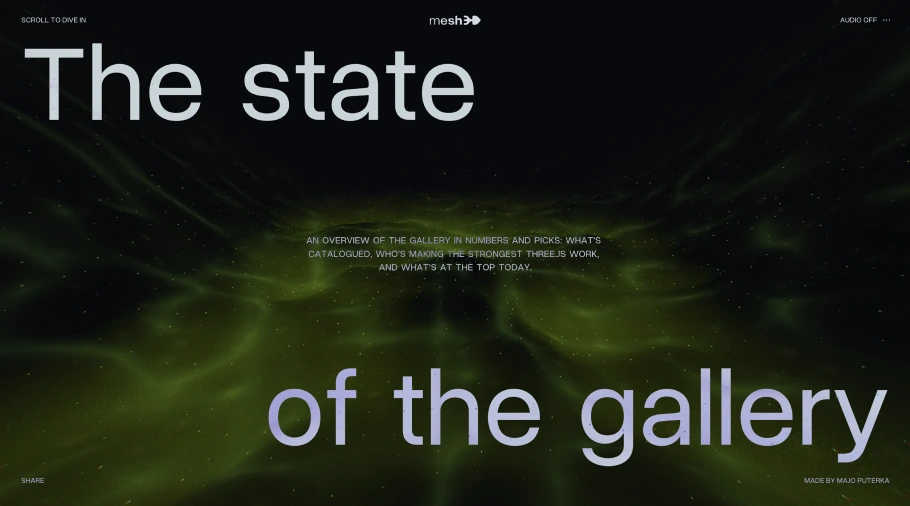
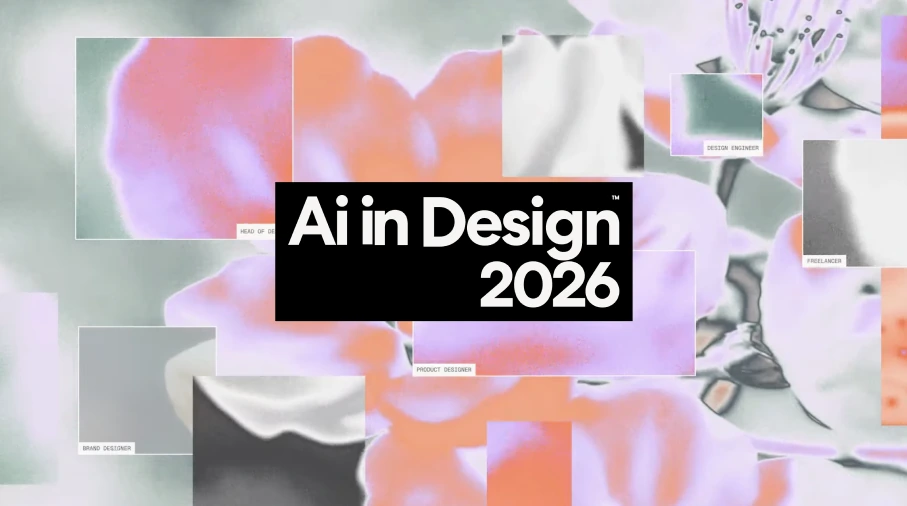
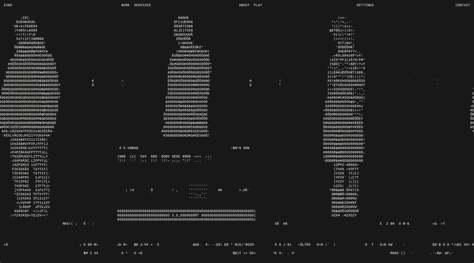
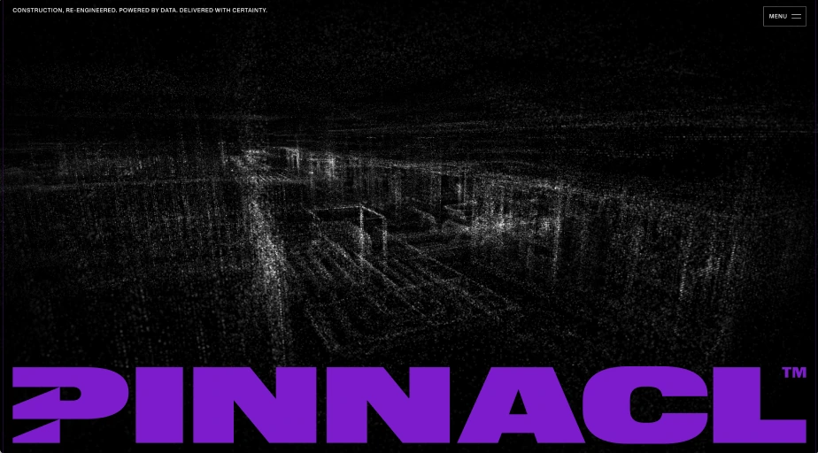
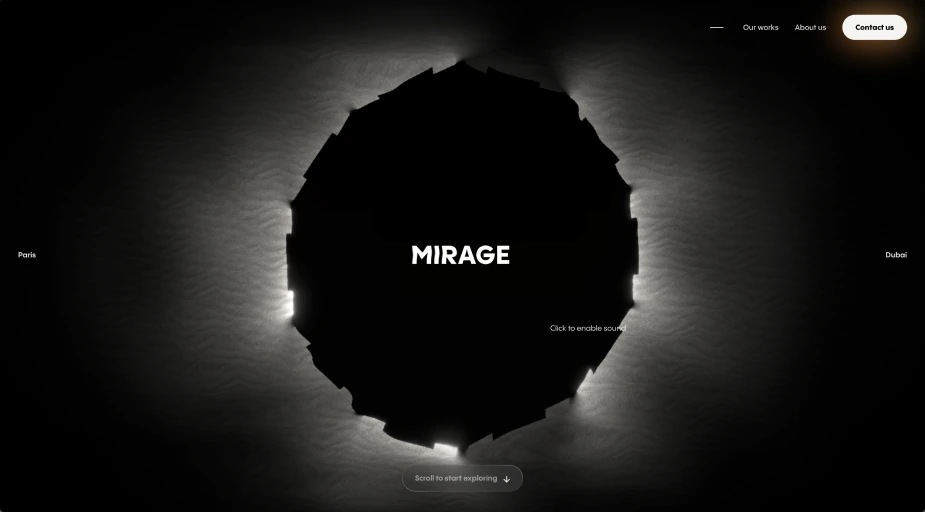

Les Hores En El Disseny
Quant de temps dediquen els dissenyadors a aprendre/dominar els programes de disseny?
Baja para ver las horas
«¿Y tú de qué vas a trabajar? Lo tuyo es fácil, ¿no? ¿No hacéis exámenes?» Siempre me preguntan lo mismo. Del diseño solo se ve el resultado: no se ven las mil pruebas ni las ideas descartadas, ni el tiempo que lleva dominar cada programa.
6.486,48 h
horas en siete programas de diseño. Son 270 días seguidos, de día y de noche.
Estas horas no se ven en el resultado final.
Cada cifra es un programa. Cuantas más horas, más grande y más frecuente.
Horas acumuladas en cada programa
-
- Patrón de sesión
- Bloques prolongados e ininterrumpidos.
- Picos de actividad
- De 10:00 a 14:00 y de 16:00 a 19:30.
- Tendencia
- Exponencial ascendente desde 2022 (+238 % entre 2022 y 2024). Se ha convertido en la herramienta troncal de diseño y prototipado.
-
- Patrón de sesión
- Sesiones segmentadas con uso intensivo de GPU y RAM.
- Tendencia
- Pico máximo en 2022 (382,30 h) y descenso hacia un estándar estable de unas 240 h al año. Se centra casi por completo en procesado fotográfico complejo, retoque digital y mockups avanzados.
-
- Patrón de sesión
- Trabajo continuo en fases de branding y maquetación vectorial.
- Tendencia
- Reducción moderada de horas, porque el diseño de layouts e interfaces ha pasado a Figma. Mantiene la exclusividad en ilustración, iconografía de precisión e identidad corporativa.
-
- Patrón de sesión
- Sesiones de larga duración asociadas a cortes y montaje.
- Tendencia
- Aumento notable a partir de 2023. Consolida una producción de vídeo regular que se estabiliza en torno a 180–210 h al año.
-
- Patrón de sesión
- Ráfagas técnicas centradas en motion graphics, keyframing y renders pesados.
- Tendencia
- Curva de especialización progresiva: en 2024 duplicó las horas de 2022.
-
- Patrón de sesión
- Bloques densos pero espaciados en el tiempo, por entregas.
- Tendencia
- Decreciente de forma sostenida. Su uso se limita a publicaciones editoriales, manuales de identidad en PDF corporativo y material para imprenta.
-
- Patrón de sesión
- Micro-sesiones utilitarias de ingesta, cribado y metadatos.
- Frecuencia media
- De 3 a 5 ejecuciones al día durante los días de rodaje y edición.
El resultado se ve en un segundo. Llegar a él lleva miles de horas.

MESH 3D
La narració s'articula mitjançant un desplaçament vertical continu (scrollytelling) on els elements 3D reaccionen a la interacció de l'usuari, integrant xifres i percentatges directament en un espai visual viu. Per al projecte, aporta un gran valor a l'hora de convertir estadístiques que podrien ser fredes en una experiència gràfica dinàmica i envoltant.

State of Ai Design
El relat s'estructura a l'estil d'una revista digital moderna dividida en capítols temàtics, combinant dades d'enquestes, reflexions sobre la pèrdua de l'ofici artesanal i testimonis directes de professionals de la indústria.

Aino.Agency
La web es presenta com la carta de presentació d'una agència de disseny escandinava, articulada a través d'una entrada impactant basada en composicions de caràcters de text i codi pur (art ASCII) que responen al moviment del ratolí, donant pas a un espai blanc, geomètric i extremadament net.

PINNACL
La plataforma presenta els serveis d'una empresa d'infraestructures tecnològiques d'alta complexitat basant el seu discurs en la precisió, la seguretat i l'anàlisi de dades. La comunicació s'aposta per un disseny fosc, sobri i contundent on les xifres més rellevants d'impacte i els anys d'experiència encapçalen la jerarquia visual al costat de blocs conceptuals numerats.

Studio Mirage
Aquest estudi de cas documenta una experiència col·lectiva creada per commemorar els quinze anys d'una saga de videojocs, on milers d'usuaris van connectar peces digitals individuals per aixecar un gran monument virtual comú.